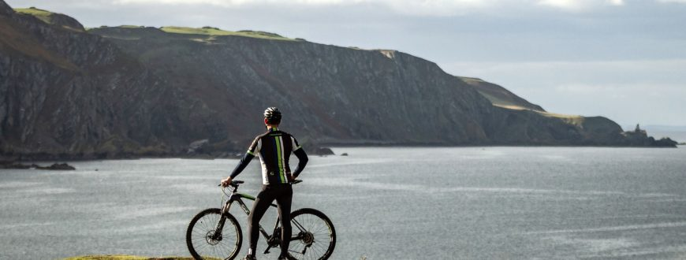

RIDER REVIEWS
In the Americas we join a family bikepacking trip in Ecuador; we pedal the Natchez Trace Parkway and stop at legendary music spots; we ride the Pacific Coast Highway in Oregon and California; go mountain biking in Moab and Canada; and explore the cities of Buenos Aires and New York by bicycle. European rides include easy-going trips around Lake Constance, along the Danube and the Loire, and coast-to-coast routes; routes in Tuscany, Spain and Corsica; and professional journeys up Mt Ventoux and around the Tour of Flanders. In Asia, we venture through Vietnam's valleys; complete the Mae Hong Son circuit in northern Thailand; cross the Indian Himalayas; and pedal through Bhutan. And in Australia and New Zealand we take in Tasmania and Queensland by mountain bike; cycle into Victoria's high country and around Adelaide on road

Northridge Loop Trail Video